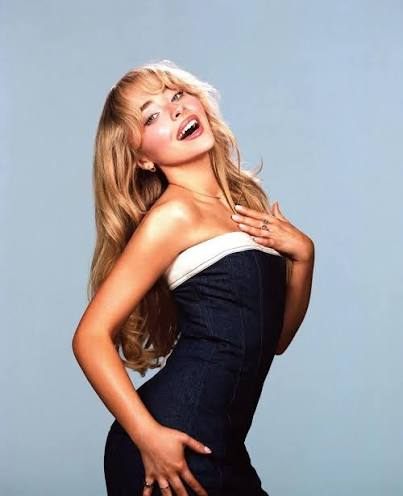

Sabrina Carpenter
Cantante, compositora y actriz
Conocer más
¿Quién es Sabrina Carpenter?
compositora, productora musical y actriz estadounidense. Obtuvo reconocimiento por primera vez
como protagonista de la serie de Disney Channel Girl Meets World (2014-2017) y firmó con
Hollywood Records, propiedad de Disney. Lanzó su sencillo debut, «Can't Blame a Girl for Trying»
en 2014, seguido de cuatro álbumes de estudio: Eyes Wide Open (2015), Evolution (2016),
Singular: Act I (2018) y Singular: Act II (2019); tres de sus sencillos, «Almost Love», «Sue Me»,
«Alien», y las más recientes, «Espresso», «Please Please Please» y «Taste» encabezaron la lista
de canciones de clubes de baile de Estados Unidos.


Sus mejores canciones
- Espresso
- Please Please Please
- Taste
- Nonsense
Su impacto en el mundo del pop
Hace dieciséis años, a los nueve años, Sabrina Carpenter empezó a subir versiones de canciones
a YouTube. Ahora ha sido nominada a seis premios Grammy, dos de los cuales ganó gracias al éxito
de su álbum de 2024, Short n' Sweet. Carpenter solía publicar versiones de canciones de Taylor
Swift y Christina Aguilera, con quienes ahora ha compartido escenario.
Alcanzar más de 7 millones de oyentes mensuales en Spotify no fue algo que sucediera de la
noche a la mañana: es el resultado de un largo camino, con cuatro álbumes, dos EP y múltiples
colaboraciones, sumado a su constancia y su confianza en su talento artístico.